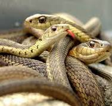

İlanlar(Lat.Sarpents)
Sürünenlor Sinfinin Pulcuglular Dastasina Aid Yarimdasta. ilanlar elastik çana qurulusuna sahibdir. Bununla da boyùk canlilari uda bilirlar. ilanlarin çoxu zaharsizdir. Zaharsiz ilan növlari ovlarina dolanaraq onlari bogur. ilanlarin zaharli növlari isa zahardan ovlanmaq, yaxud ozlarini qorumaq maqsadi ila istifada edirlar. Ilanlar hagarat, qurbaga, qus, baliq, kartankala, siçan, yumurta va s ila qidalanir. ilanlari öyranan elm serpantologiya adlanir.
Deri
Ilan darisi pulcuqlarla örtülüdür, hamar va quru qurulusa malikdir. Ilanlarin qarin va bel pulcuqlarinin qurulusu farqlidir. Dari ranglari cox müxtalidir. Bazilari bir ranga, bazilari isa 3-4 ranga sahibdir. Rangli ilanlar, asasan, zaharlidir. Ancaq zaharli olmayan rangli ilanlar da var. Rangli dari tahlükani bildirir va dusmanlari qorxutmaq üçün istifada olunur, amma bu o demak deyil ki, birrangli ilanlarin darilari gorunmaq ücün alverissizdir. Birrangli ilanlarin rangi daha cox bozumtul, gahvayi va gara rangli olur ki, bu ranglar da torpaqda, qumda, dasda gizlanmak ücün (kamuflyaj) ideal ranglardir. Dari dayisdirma Bir çox canli kimi ilanlar da dari dayisdirir. Köhna dari agiz tarafdan cirir, ilan das, agac kimi obyektlara sürtünarak darisini cixardir. Bu prosesin bir neça funksiyasi var. ilk növbada ilan köhna daridan azad olur, ham da parazitlardan tamizlanir.
Zeher
Zahar basin arxasindaki zahar vazilarinda toplanir va dislar vasitasila ova, yaxud düsmana yeridilir. Tüpüran kobra kimi bir neça ilan tahlüka hiss etdikda düsmanin gözüna zahar tüpürür. Bazi heyvanlarda ilan zaharina qarsi tabii peyvand vardir va zahar onlara tasir etmir.